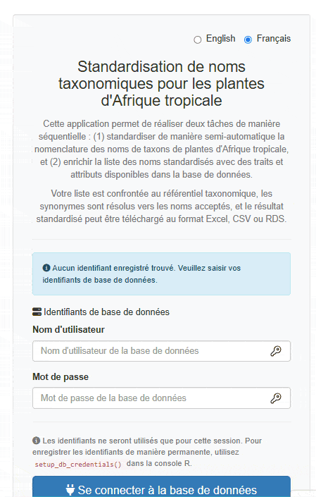
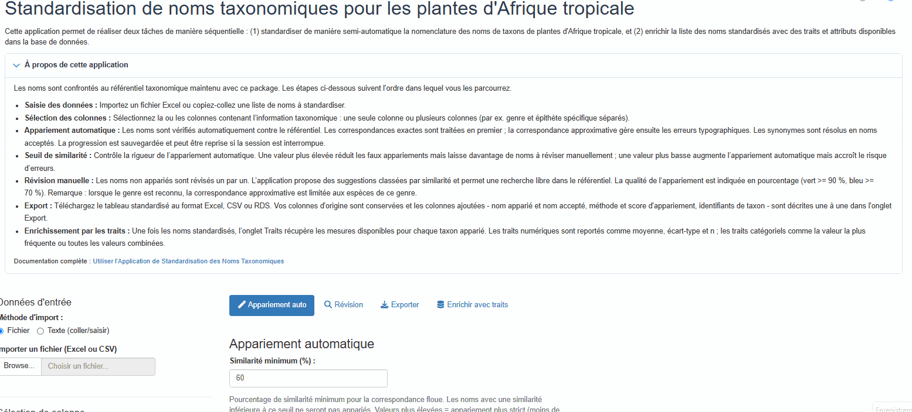
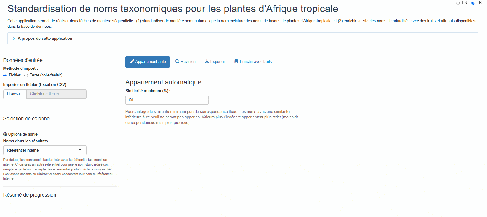
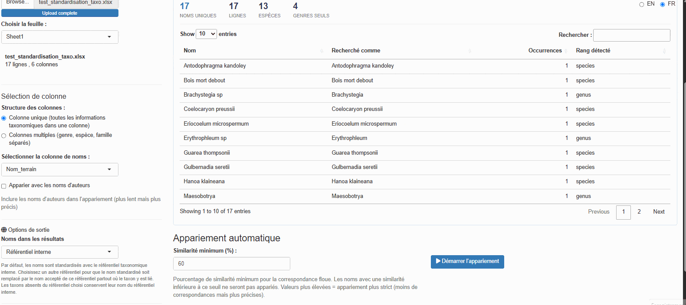
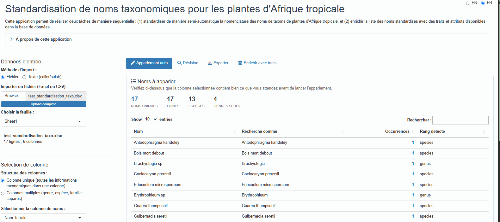
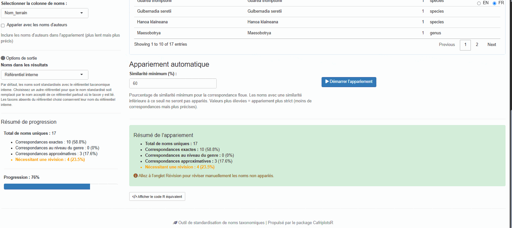
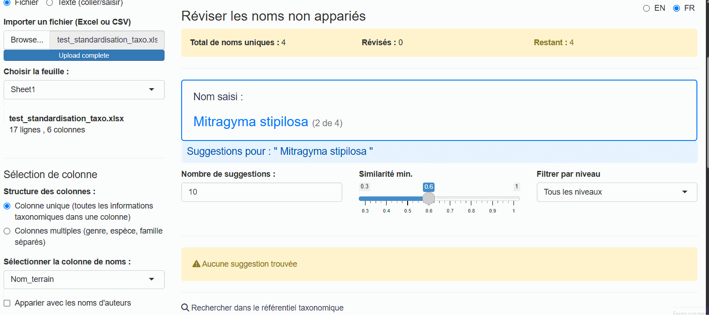
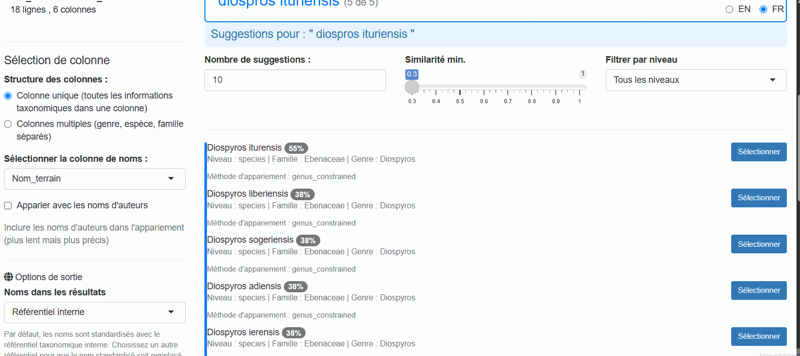
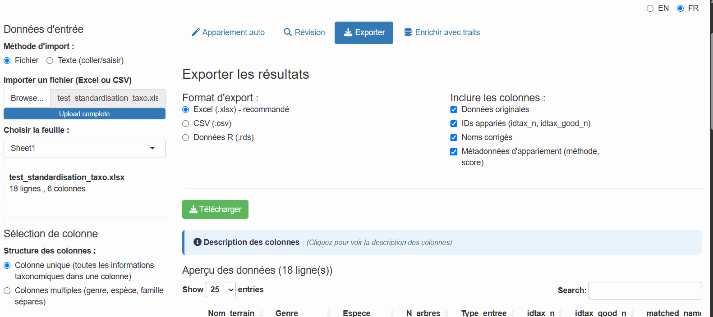
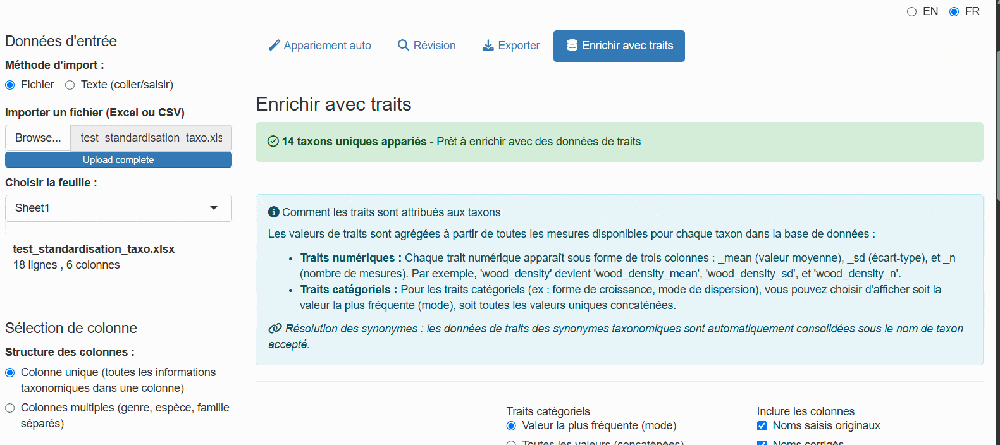

Using the Taxonomic Name Standardization App
taxonomic-app.RmdIntroduction
The launch_taxonomic_match_app() function provides an
interactive Shiny application for standardizing taxonomic names against
the Central African plant taxonomic backbone database. This visual
interface is ideal for:
- Exploring and cleaning taxonomic data interactively
- Understanding match quality through visual feedback
- Manually reviewing uncertain matches
- Enriching data with species-level traits from the database
- Checking taxonomic name provenance against external references (WCVP, APD)
Prerequisites
Where the app runs
The same application exists in two places, and this vignette refers to both.
-
Locally, in your own R session, via
launch_taxonomic_match_app(). This is what the code examples below assume. - Hosted, at https://cafri-taxomatch.lab.sspcloud.fr — the same app served from SSP Cloud, which you open in a browser with nothing to install and no R required. Wherever this vignette says the hosted app, it means that address.
The hosted copy queries the same database, so a standardized list
exported from it carries the same idtax_n values as one
produced locally. Use it to try the app out, or to point a colleague at
the workflow without asking them to install the package. For repeated
work on your own lists, launching locally is usually the faster choice —
see Slow Matching
Performance.
With database credentials (full access)
To access all features including traits enrichment, you need database
credentials configured (see setup_db_credentials()). Once
launched, the app presents a login screen where you enter your
credentials.
Without credentials
Since March 2026, the app can be used without any database credentials, by either of two routes.
Public read-only account. Click “Connect as public user” on the login screen. Matching and traits enrichment both work; adding or modifying data does not. This is the credential-free route available everywhere, including the hosted app, and it is the one to reach for if you simply have no account.
Offline cached backbone. Click “Use offline (cached backbone)” to work from a locally cached copy of the backbone:
- Automatic matching and fuzzy suggestions work via a cached local backbone
- Manual review is fully functional
- Traits enrichment is hidden (requires a live database connection)
- A “Read-only” badge is displayed to indicate limited permissions
Offline mode earns its keep when the database is unreachable from where you are working. It appears only when you launch the app yourself from R and a cache has already been downloaded. The hosted app does not offer it, because there the cache would sit on the server rather than on your machine — so it would solve nothing, and public access already covers working without an account.
Quick Start
Launch the app with a single command:
Alternatively, pre-load your data or set options:
# With R data.frame
my_data <- read.csv("tree_inventory.csv")
launch_taxonomic_match_app(data = my_data, name_column = "species_name")
# Launch in English (default is French)
launch_taxonomic_match_app(language = "en")
# Show more suggestions per name during review
launch_taxonomic_match_app(max_suggestions = 20)The matching threshold is not a launch argument: it is set on the Auto Match tab, as a percentage, and can be changed between runs. See Adjusting Fuzzy Matching.
Step-by-Step Walkthrough
Phase 1: Initial View
When you first launch the app, you see a login screen. It offers the three routes described under Prerequisites: your own database credentials, the public read-only account, or the offline cached backbone.

After authenticating (or choosing offline mode), the main interface appears with a sidebar for configuration and tabs for different workflow phases:

The app uses a tabbed workflow that guides you through each phase sequentially:
- Auto Match — Automatic matching
- Review — Manual review of unmatched names
- Export — Download results
- Traits Enrichment — Add species traits (hidden in offline mode)
Phase 2: Upload Your Data
The first step is to provide your data. The app offers two input methods:
File Upload (Default)
- Upload an Excel file using the file browser (supports .xlsx, .xls); for multi-sheet files you can select which sheet to use
- Upload a CSV file
-
Use pre-loaded R data (if you passed the
dataparameter)

The app displays a preview of your uploaded data so you can verify it
was read correctly. Excel files are read with
guess_max = 30000 to improve column type detection for
large files.
Text Input (Copy-Paste)
For quick standardization of a few names, or when you have a list copied from another source, use the Text input method:

- Select “Text input (paste/type)” from the input method radio buttons
- Paste or type your taxonomic names in the text area
- Click “Load names” to process the input
Accepted separators: - One name per line
(recommended) - Comma-separated:
Lophira alata, Terminalia superba, Aucoumea klaineana -
Semicolon-separated:
Lophira alata; Terminalia superba; Aucoumea klaineana -
Tab-separated (useful when pasting from Excel)
The app automatically removes empty lines, trims whitespace, and
deduplicates names while preserving order. A single column named
taxon_name is created for matching.
Phase 3: Select Name Column(s)
Once data is loaded, you have two options for selecting taxonomic names:
Single Column Mode (Default)
Select one column containing the full taxonomic name:

The dropdown menu shows all available columns from your dataset. Choose the one containing species names (typically formatted as “Genus species” or “Genus species Author”).
Multiple Column Mode
If your data has separate columns for genus, species, and family, enable “Use multiple columns”:

The app combines these columns hierarchically: - Genus + species available → “Genus species” - Genus only → “Genus” - Family only → “Family”
You can also optionally include an author column.
Phase 4: Automatic Matching
Click the “Start Matching” button to begin the automatic matching process.
Choosing the backbone copy. Before matching starts the app may ask whether to use the taxonomic backbone it already has cached or download a fresh copy. The cached copy is much faster and is what you want in ordinary use; download a fresh one after taxa have been added or revised in the database, or if you are unsure how old your cache is. The dialog reports the cache’s age so you can decide.
The app then works through the strategy below, stopping at the first stage that matches each name. Names are handled independently, so one list can come back with results from every stage:
- Exact match on species: Direct lookup of the full name (genus + species)
- Exact match on genus: Match at genus level
- Exact match on family: Match at family level
- Exact match on higher rank: Match at order or class level (e.g. names ending in -opsida, -psida)
- Genus-constrained fuzzy match: When the genus is recognised but the epithet is not, approximate matching is restricted to species within that genus. This is what catches most misspellings, and it is far safer than searching the whole backbone because the candidate set is already botanically plausible
-
Full fuzzy match: Approximate string matching
(trigram-Jaccard via
stringdist) across the whole backbone — the last resort, used when even the genus is unrecognised
Stages 1–4 all record match_method = "exact"; the rank
that matched is recorded in tax_level. Stage 5 records
genus_constrained and stage 6 records fuzzy,
which is why the two are worth telling apart when you review the
results.

The progress bar shows real-time status and correctly accounts for manually reviewed names in the completion percentage. The sidebar displays live statistics:
- Number of exact matches
- Number of genus-level matches
- Number of fuzzy matches
- Number of unmatched names
Checkpoint / resume: Matching progress is automatically saved to a temporary file. If you accidentally close the browser tab, re-opening the app will offer to resume from where you left off.
Phase 5: Review Match Results
When matching completes, the Auto Match tab shows a Matching Summary: counts, not rows. It tells you how the run went, not what happened to any individual name.

- Total unique names submitted
- Exact matches, with their share of the total
- Genus-level matches
- Fuzzy matches
- Requiring review — shown in orange when above zero, with a reminder to go to the Review tab
The per-name results are not on this tab. To see them you go to one of two places:
- The Review tab, which walks you through the names the matcher could not settle, one at a time.
- The Export tab, whose preview table lists every row
with all its columns —
matched_name,match_method,match_score,idtax_n,is_synonym,accepted_nameand the rest. See Understanding Output Columns for what each one holds.
Where the colours are. Scores are colour-coded as badges on the cards in the Review tab — beside each fuzzy suggestion and each manual-search result — and nowhere else. The Export preview is a plain table with no conditional colouring, and the Matching Summary above has no per-name scores to colour at all. Read the badges as:
- Exact match (100 %): perfect match, no review needed
- High similarity (≥ 90 %, green): very likely correct, a glance is enough
- Medium similarity (70–89 %, blue): possible match, worth reading
- Low similarity (< 70 %): uncertain, decide by hand. Fuzzy suggestion cards shade 50–69 % yellow and anything below that grey; manual-search cards go straight to grey under 70 %
- No match: requires manual selection
A name matched by genus_constrained deserves more
confidence than a plain fuzzy match at the same score,
because the candidates it was compared against were restricted to
species in a genus the app had already recognised.
Phase 6: Manual Review
For unmatched or uncertain names, switch to the “Review” tab to manually review and select matches:

The review interface provides two ways to find matches:
Fuzzy Suggestions Panel
Shows automatic suggestions ranked by similarity with advanced filtering options:

Filtering options:
- Number of suggestions: Slider to show 5–30 suggestions
- Minimum similarity: Adjust threshold (0.3–1.0)
- Taxonomic level filter: Filter by All, Species, Genus, Family, Order, Class, or Infraspecific
Suggestions are always listed best match first, by similarity score.
Each suggestion card displays:
- Name with color-coded similarity badge (green ≥ 90 %, blue ≥ 70 %, yellow ≥ 50 %, grey below)
- Taxonomic level and family
- Synonym information if applicable
- Select button for one-click acceptance
Manual Search Panel
For names without good suggestions, use the manual search:

- Type any search term to query the taxonomic backbone
- Filter results by taxonomic level
- View detailed information for each match
- Select the correct match or mark as “unresolved”
Navigation:
- Use Previous/Skip/Next buttons to browse unmatched names
- Progress counter shows reviewed vs. remaining names
- The app remembers your selections and automatically updates the results
Phase 7: Export Results
Switch to the “Export” tab to download your standardized dataset:

Available formats:
- Excel (.xlsx): Best for sharing with collaborators
- CSV (.csv): Universal tabular format
- RDS (.rds): R-native format preserving data types
Selectable columns. Your original columns are always included; the three groups below can each be switched off:
-
Matched IDs —
idtax_n,idtax_good_n -
Corrected names —
corrected_name,matched_name -
Match metadata —
match_method,match_score,is_synonym,accepted_name
Backbone columns are not one of these groups: they are appended
whenever a reference other than the internal backbone was chosen before
matching, and travel with the export either way. The internal
id_data row identifier is always stripped.
What the file is called inside. The Excel export
puts the names on a sheet named taxonomy. When the names
came from a reference other than the internal backbone, a second sheet
named citations records what to cite for them — see Citing the reference you chose.
Column descriptions in the app. Beside the preview, the Export tab lists every standardized column present in your results with a one-line description of what it holds — the same content as Understanding Output Columns below. Only the columns actually present are described, so the list reflects the options you chose rather than everything the app can produce. Your own input columns are preserved but not described individually, since the app knows nothing about them.
A preview table shows the data before export with pagination controls.
This tab exports the standardized names. If you also want traits attached, carry on to the next phase, which has download buttons of its own.
Phase 8: Enrich Data with Traits
Switch to the “Traits Enrichment” tab to add species-level traits to your matched data (requires a database connection; this tab is hidden in offline mode):

A taxon usually carries several measurements of the same trait, from different individuals, sources or studies, so every trait has to be summarised to one value per taxon before it can be added as a column. How that is done depends on the trait’s type:
-
Numeric traits (wood density, seed mass, …) are
reported as three columns — the mean, the
standard deviation and n, the number
of measurements behind it. Always read
nbefore using a mean: a wood density averaged from one measurement and one averaged from forty are the same number with very different weight behind them, and ansdis only meaningful oncenis at least a few - Categorical traits (growth form, phenology, …) are summarised according to the aggregation mode you choose
Options:
-
Categorical aggregation mode:
- “mode” — Use the most frequent value per taxon. Gives one clean value per taxon, but silently hides disagreement between sources
- “concat” — Concatenate all unique values. Keeps every recorded value, so genuine variation and contradictions both stay visible. Prefer this when you intend to inspect the traits rather than compute on them directly
-
Select columns to include:
- Original input names
- Corrected names
- Taxonomic IDs
- Match metadata
Available traits include growth form, wood density, leaf traits, and ecological characteristics. Which traits come back depends on what the database actually holds for your taxa, so a list of well-studied timber species will be far better covered than a list of herbs.
The enriched data combines your matched taxa with selected traits. A wide format (one row per taxon, traits as columns) and a long format (one row per taxon × trait combination) are both available as separate sub-tabs:

Note: The enriched export creates one row per unique taxon, not per input row. Input names are concatenated with pipe separators.
Data Sources panel
A Data Sources sub-tab lists all trait citations used, with measurement counts per source. This helps you track data provenance for your analysis and cite sources correctly.
Downloading the enriched data
You do not go back to the Export tab for this. Each results sub-tab carries its own green download button:
- Download Wide Format — one row per taxon, traits as columns
- Download Long Format — one row per taxon × trait, shown only when long-format data exists
Both produce an Excel file named
taxa_traits_wide_YYYYMMDD.xlsx or
taxa_traits_long_YYYYMMDD.xlsx, dated the day you download
it. Each file holds a traits sheet and, whenever citations
were collected, a second citations sheet with the
provenance from the Data Sources panel — so the sources travel with the
data instead of being left behind in the app.
The Export tab and these buttons answer different questions: Export gives you your rows with standardized names attached, while these give you the traits table built from them, one row per taxon.
Understanding Output Columns
Your original columns are always preserved. The app appends the columns below — the same descriptions are shown in the app itself, beside the preview table on the Export tab, so you do not have to come back here to read them.
| Column | Description |
|---|---|
idtax_n |
Identifier of the matched taxon in the taxonomic backbone |
idtax_good_n |
Identifier of the accepted taxon. Differs from idtax_n
when the matched name is a synonym |
matched_name |
Name found in the backbone corresponding to your input name — this may itself be a synonym |
corrected_name |
Final standardized name: the accepted name when the match is a synonym, or the name from the chosen reference when one was chosen |
accepted_name |
Accepted name when the matched name is a synonym; empty otherwise |
is_synonym |
TRUE when the matched name is a synonym of an accepted
name |
match_method |
How the name was matched — see the table below |
match_score |
Similarity between your input name and the matched name, 0 to 1 (1 = exact, or a match you confirmed yourself) |
When a reference other than the internal backbone is chosen (see Names from another reference),
four more columns are appended and corrected_name is
replaced by that reference’s name wherever one
exists:
| Column | Description |
|---|---|
backbone_taxon_name |
Accepted name in the chosen reference |
backbone_family |
Family according to the chosen reference |
backbone_authors |
Taxonomic authorship according to the chosen reference |
backbone_status_raw |
Status of the name in the chosen reference
(e.g. Accepted) |
name_source |
Which reference supplied corrected_name:
internal, or the code of the chosen one (wcvp,
apd, …) |
Choosing WCVP additionally repeats those four columns as
wcvp_taxon_name, wcvp_family,
wcvp_taxon_authors and wcvp_taxon_status, the
names they had before any other reference existed, so that scripts
written against earlier versions still find them.
Values of match_method
| Value | Meaning |
|---|---|
exact |
The name was found verbatim in the backbone. All four exact tiers
report exact — see the note below |
genus_constrained |
The genus was recognised, so fuzzy matching was restricted to species within that genus. Usually the most trustworthy fuzzy result |
fuzzy |
Approximate match against the whole backbone, used when the genus was not recognised |
manual |
You chose this match yourself on the Review tab |
unresolved |
You marked the name as impossible to resolve on the Review tab |
no_match |
Automatic matching found nothing and the name has not been reviewed yet |
The exact tier is not recorded in
match_method. All four exact tiers — species,
genus, family and higher rank — write exact. Which one
applied is recorded separately in tax_level
(genus, family, order,
higher), so read that column rather than expecting
exact_species or exact_genus, which the app
never produces.
The app also adds an internal id_data row identifier
when your file does not already contain one. It is used to keep rows
aligned through matching and review, and is removed from every export,
so you will not see it in the downloaded file.
Advanced Options
Language Selection
The app supports bilingual operation with French and English interfaces. French is the default language.
A language toggle is located in the top-right corner of the app: - Click “FR” for French interface - Click “EN” for English interface
The switch is instant and affects all UI elements. To set the initial language programmatically:
# Launch app in English
launch_taxonomic_match_app(language = "en")
# Launch app in French (default)
launch_taxonomic_match_app(language = "fr")Names from another reference
The app can optionally report results in the words of an external reference rather than the internal backbone — the World Checklist of Vascular Plants (WCVP), maintained by the Royal Botanic Gardens, Kew, the African Plant Database (APD), or any other backbone the taxa database registers as a source of names. A “Names in the output” menu appears in the sidebar listing the internal backbone and every reference available; it is absent when the database offers none, and in offline mode, where no link can be followed.
The choice has no effect on matching itself — names are always matched against the internal backbone first — but it changes what the output reports. Picking a reference adds four columns:
-
backbone_taxon_name— Accepted name in that reference -
backbone_family— Family according to it -
backbone_authors— Taxonomic authorship according to it -
backbone_status_raw— Status of the name there (e.g.Accepted)
It also rewrites corrected_name.
Wherever the chosen reference holds the taxon,
corrected_name becomes its name rather than the internal
backbone’s; taxa absent from it keep their internal name. The
name_source column records which reference supplied each
value (internal, or the code of the chosen one), so the
substitution stays auditable — check it before treating
corrected_name as coming from a single reference.
Choose a reference when your results must line up with an international checklist, and leave the menu on the internal backbone when you need names consistent with the rest of the database. The choice must be made before matching, since the lookup happens as part of that step.
Citing the reference you chose
WCVP and APD are published works, and using their names means citing them. As soon as you pick one, the app shows the citation its publisher asks for, right under the menu, together with a link to the source:
- APD — African Plant Database, Conservatoire et Jardin botaniques de la Ville de Genève and South African National Biodiversity Institute, Pretoria — http://africanplantdatabase.ch
- WCVP — World Checklist of Vascular Plants, Royal Botanic Gardens, Kew — http://sftp.kew.org/pub/data-repositories/WCVP/. Kew’s wording also credits rWCVP, the R package our copy was downloaded with
The version and access date in the sentence are those of the copy held in the database, not the day you ran the query. Two people citing the same run therefore cite the same thing, and a run from last year keeps citing what it actually used.
The Excel export carries the citation with the data, on a second
sheet named citations — reference, publisher, version,
access date, link and the sentence itself. CSV holds a single table and
cannot carry it; copy the sentence from the app if you export that
way.
From the console, the same text comes from
query_citations(), alongside the trait citations, or from
backbone_reference() when you want the version and date in
columns of their own:
cons <- list(main = call.mydb(), taxa = call.mydb.taxa())
# everything there is to cite, traits and name sources together
query_citations(cons$main)
# just the name sources, with the parts spelled out
backbone_reference(con_taxa = cons$taxa)
backbone_reference("wcvp", cons$taxa)$citationBackbone rows in query_citations() are marked
source = "backbone" and carry no id_citation —
they live in the taxa database, not in table_citations, and
nothing points at them with a foreign key. The sentence to paste is in
notes.
Adjusting Fuzzy Matching
Matching sensitivity is controlled by the Minimum similarity (%) field at the top of the Auto Match tab, next to the Start Matching button. It starts at 60 %.
Lower values cast a wider net but may include false positives; higher values are more conservative but leave more names for manual review. Because the field sits beside the button, the sensible way to use it is to run, read the statistics in the sidebar, adjust and run again on the same list — a decision made against the names in front of you rather than fixed in advance.
The threshold each run actually used is recorded with that run: it appears in the generated script under Show Equivalent R Code, so a run remains reproducible without you having to note the value down.
The same threshold seeds the Min. similarity slider on the Review tab, which filters the suggestions offered there. Moving one does not move the other — the review slider is for widening or narrowing what you are shown while reviewing a single name.
Increasing Suggestions
Show more fuzzy match suggestions per name:
# Show top 20 suggestions instead of default 10
launch_taxonomic_match_app(max_suggestions = 20)You can also adjust this interactively in the Review tab using the slider.
Offline Mode
If you do not have a database connection, click “Use offline (cached backbone)” on the login screen. The app:
- Downloads and caches the backbone locally on first use
- Performs string matching entirely in R via
stringdist(trigram-Jaccard) - Supports auto-matching, fuzzy suggestions, and manual search
- Hides the Traits Enrichment tab (requires live connection)
- Displays a “Read-only” badge throughout the session
Function Parameters
launch_taxonomic_match_app(
data = NULL, # Optional: pre-load a data.frame
name_column = NULL, # Optional: pre-select a column name
language = c("fr", "en"),# Interface language (default: "fr")
max_suggestions = 10, # Max suggestions per unmatched name
mode = "interactive",# Review mode ("interactive" or "batch")
launch.browser = TRUE # Whether to open app in the browser
)Troubleshooting
Connection Issues
Problem: “Failed to connect to database”
Solutions:
# Check connection
db_diagnostic()
# Reset credentials if needed
remove_db_credentials()
setup_db_credentials()Alternatively, use offline mode (click “Use offline (cached backbone)” on the login screen) to work without a live database connection.
No Fuzzy Matches Found
Problem: No suggestions appear for unmatched names
Possible causes: - The Minimum similarity (%) field on the Auto Match tab is set too high - Taxonomic names contain typos or non-standard formatting - Names not present in the taxonomic backbone (e.g., non-African taxa)
Solutions: - Lower Minimum similarity (%) on the Auto Match tab and run again, or widen the Min. similarity slider on the Review tab - Use the taxonomic level filter to search at genus or family level - Clean input names (remove extra spaces, fix obvious typos) - Verify names are African taxa
Slow Matching Performance
Problem: Matching takes very long for large datasets
Solutions: - Launch the app locally rather
than using the hosted copy. The hosted app at https://cafri-taxomatch.lab.sspcloud.fr is often
noticeably slower than the same app on your own laptop, and not because
the server is small. It is a shared one. Every matching run there
competes for the same CPU quota as every other user’s run, and that
quota is burst capacity rather than reserved, so on a busy SSP Cloud
node you may get less of it than the ceiling suggests. On top of that,
your file has to be uploaded before anything starts, and every click
makes a round trip. Locally you have the machine to yourself. The hosted
copy exists for convenience and for people who do not use R — for a long
list you are working through yourself, launch it from R. - Enable
offline mode: matching runs locally via
stringdist without database round-trips - Use batch
processing instead: match_taxonomic_names() for
programmatic workflows - Process data in chunks (split large
datasets)
When to Use the App vs. Programmatic Approach
Use the Shiny App when:
- Exploring data interactively
- You prefer visual interfaces
- Dataset is small to medium size (<5,000 rows)
- Need to manually review uncertain matches
- Learning the matching process
Use match_taxonomic_names() when:
- Processing large datasets (>5,000 rows)
- Automating workflows in scripts
- Integrating with data pipelines
- Reproducibility is critical (NEVER REMOVE THE COLUMN THAT CONTAINS THE ORIGINAL NAME)
- Batch processing multiple files
Example programmatic approach:
# Load data
my_data <- read.csv("tree_inventory.csv")
# Match names
matched <- match_taxonomic_names(
names = my_data$species_name,
min_similarity = 0.7
)
# Merge back with original data
result <- cbind(my_data, matched)
# Export
write.csv(result, "standardized_inventory.csv", row.names = FALSE)See Also
-
match_taxonomic_names(): Underlying matching function for programmatic use -
query_taxa(): Query taxonomic backbone directly -
match_tax(): Simple taxonomic lookup function -
launch_taxo_backbone_app(): Interactive tool for exploring the taxonomic backbone -
vignette("using-query-plots"): Guide to querying plot data
Tips for Best Results
- Clean your data first: Remove obvious typos, extra whitespace, and special characters
- Understand your data: Know which taxonomic groups are in your dataset
- Use multi-column mode: If you have separate genus/species/family columns, combine them for better matching
- Filter by taxonomic level: Use the level filter in the Review tab to find genus or family matches
- Review match scores: Don’t blindly accept low-similarity matches (<0.6)
- Use checkpoint/resume: The app saves your progress automatically — if you close the browser tab, you can pick up where you left off
- Keep the run reproducible: the threshold a run used is written into the script under Show Equivalent R Code — copy that rather than noting the value by hand
- Cite data sources: Check the Data Sources panel in the Traits tab for citations to include in your methods, and, if you chose a reference other than the internal backbone, cite it too — see Citing the reference you chose
Example Workflow
Here’s a complete workflow from start to finish:
# 1. Load your data
trees <- read.csv("forest_inventory.csv")
# Columns: plot_id, tree_number, species_name, dbh, height
# 2. Launch app with data
launch_taxonomic_match_app(
data = trees,
name_column = "species_name",
language = "en"
)
# 3. In the app:
# - Authenticate (or choose offline mode)
# - Review automatic matches in the Auto Match tab
# - Use the Review tab to resolve unmatched names
# - Optionally choose another reference for the output names in the sidebar
# - Optionally enrich with traits in the Traits Enrichment tab
# (check the Data Sources panel for citations)
# - Export as "forest_inventory_standardized.xlsx"
# 4. Continue analysis with standardized data
standardized <- readxl::read_excel("forest_inventory_standardized.xlsx")
# Now you have clean taxonomic IDs for further analysis!This workflow ensures your taxonomic data is standardized and ready for downstream analyses like diversity metrics, trait-based analyses, or database integration.